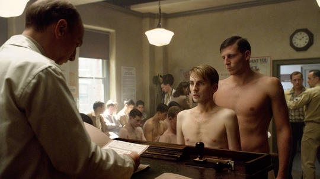
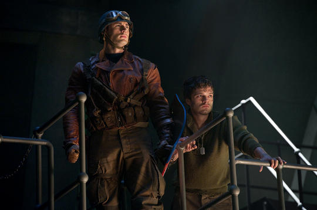
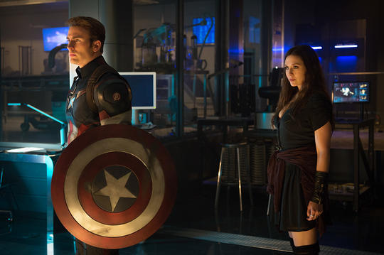

Full Name: Steve Rogers
Place Of Birth: Brooklyn
Alignment: Good
Gender: Male
Race: Super Soldier
Intelligence: 100%
Strength: 85%
Speed: 58%
Durability: 85%
Power: 100%
Combat: 64%
Feeling the need to do his part in the war and envious of his friend Bucky Barnes’ recent military enlistment, Steve Rogers makes multiple attempts at enlistment. Scientist Dr. Abraham Erskine notices Steve Roger and enquires from Rogers as to why he is so determined in taking part in the war when there is so many people already fighting and if he wanted to kill Nazis, Steve Rogers replies that he just doesn’t like bullies no matter where they are from. Very happy with his answer Dr. Abraham Erskine enlists him in not in the army but in his super soldier experiment.
After the a successful reaction from Dr. Erskine’s experiment, Steve Rogers was transformed into a super soldier, however Dr. Erskine was killed and took the secrets of how to create more super soldiers with him to the grave, making Rogers the only super soldier. Saddened by the loss of his friend Rogers sets out to do what he originally planned, help his fellow soldiers in the war. During a valiant and almost impossible mission Rogers was forced to land a plane into the artic where he was frozen but kept alive thanks to the super solider experiment. 60 years later Rogers is discovered and defrosted, now he joins the Avengers in hopes of stopping bullies not from another country but from another world
|

|

|

|